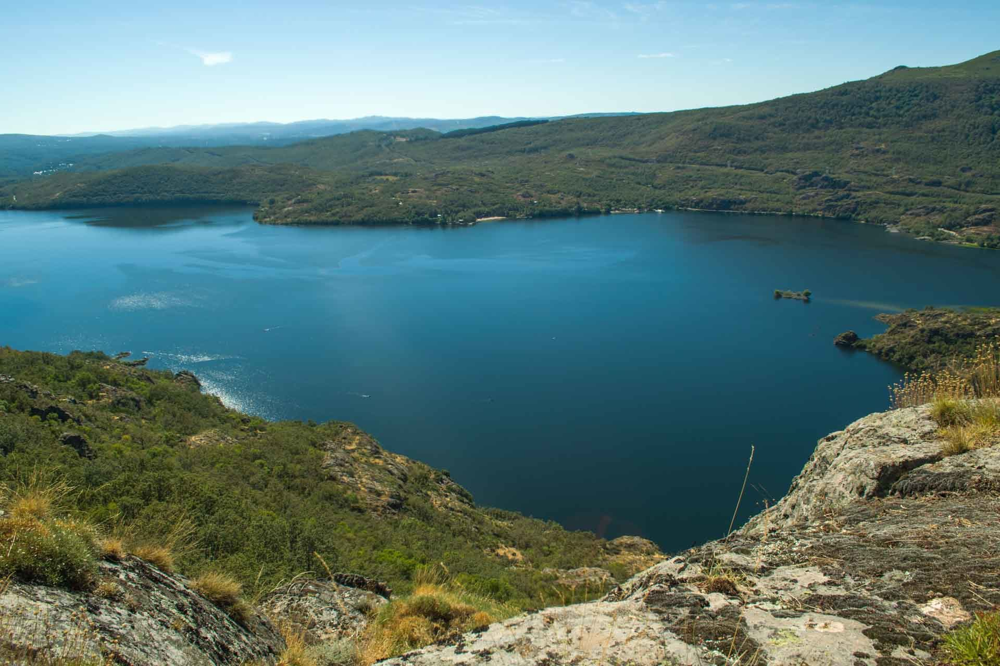
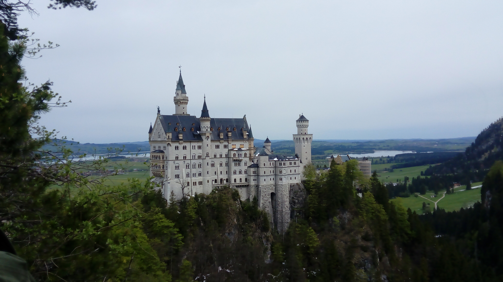
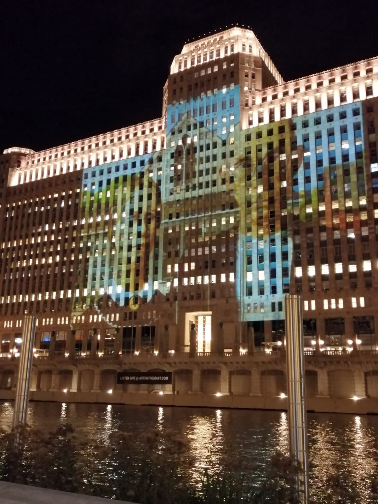

VIAJE 01
Sanabria
Veranos de entre y
Acerca del viaje
Uno de los lugares a los que más veces he ido de vacaciones es Vigo de Sanabria, ya que mi tío tiene una casa cerca del lago.
Algunos de mis viajes más memorables

VIAJE 01
Veranos de entre y
Uno de los lugares a los que más veces he ido de vacaciones es Vigo de Sanabria, ya que mi tío tiene una casa cerca del lago.

VIAJE 02
Durante el instituto participé en un intercambio de alemán. Gracias a esto, tuve la oportunidad de visitar un pueblo cercano a Munich.
Entre muchos de los lugares que visitamos, se encuentra el castillo de Neuschwanstein, en el que está basado el castillo de Disney.

VIAJE 03
En el instituto también tuve la posibilidad de participar en el intercambio de inglés, en este caso con un instituto de Chicago.
Aunque no pude asistir a todas las actividades porque estuve enferma unos días, pude disfrutar bastante la experiencia.